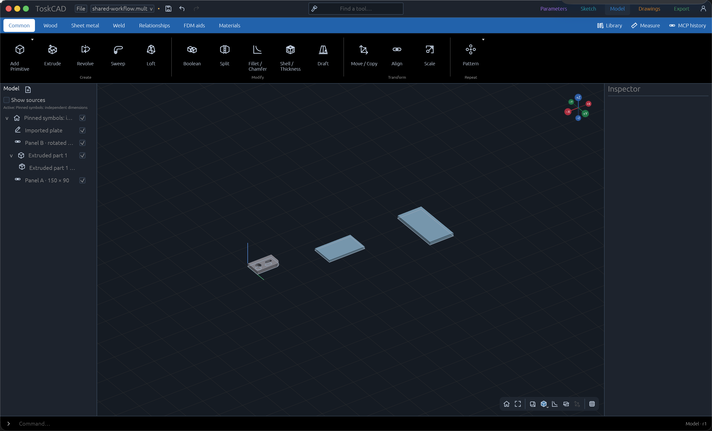
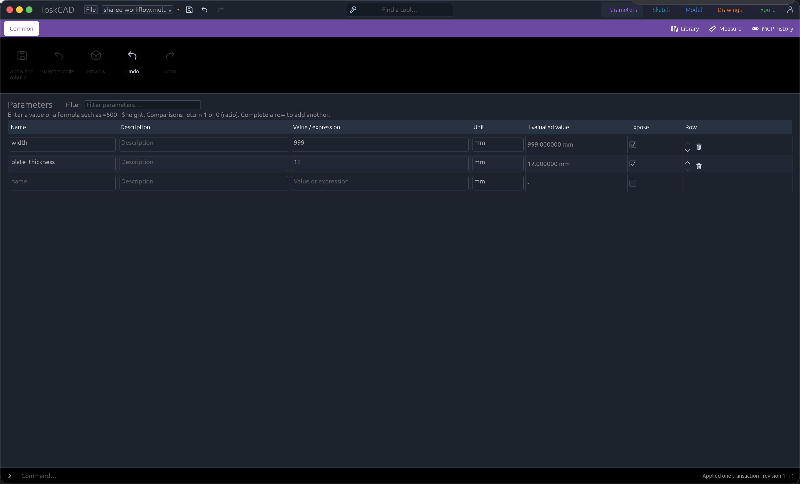
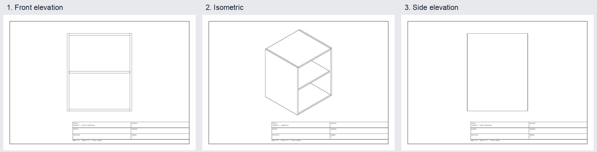

Native parametric CAD.
Design parts with named dimensions, constrained sketches and exact solid geometry. ToskCAD is an open-source desktop CAD application built in Rust.
Build from sourceInside the application.
One project connects your dimensions, parts and drawing pages. Explore the native development build below.

Turn profiles into parts.
Build solid parts from sketches, then place components independently in the same project. The Model workspace brings the part tree, 3D view and tool controls together.
The example shows an imported plate with a hole and slot alongside two panel instances. Each panel can keep its own dimensions.
Native macOS capture · October 29, 2026. Select the image to inspect it at full size.

Give dimensions a name.
Store sizes as named values with units, or express one dimension in terms of another. Change a plate thickness or panel width in the table instead of finding every dependent measurement.
Apply and rebuild commits checked edits to the project. Discard lets you leave an experiment behind without changing the saved design.
Native macOS capture · October 29, 2026. The interface continues to evolve.

Describe the part on paper.
Create drawing pages from model views, then add dimensions, notes and a title block. Front, side and isometric projections help communicate the same design from different angles.
These cabinet pages show output from the native drawing workflow. Drawing and export capabilities have their own verification notes and limits.
Generated drawing output · October 31, 2026. Select the image for the original pages.
Sketch to workshop.
Keep the source design connected as you move between workspaces.
- Start on a plane
- Create or open a sketch in the 3D view. Draw profiles and constrain their dimensions and relationships before using them in a solid feature.
- Prepare an output
- Export brings file output, print preparation and render handoff into one workspace. Available formats and supported geometry depend on the operation; check the verification notes for your workflow.
- Control it externally
- The local MCP server lets external applications inspect and edit a project through the same transactional API as the desktop UI, with attributable history and reviewable changes.
Built in the open.
Rust application code and the Open CASCADE geometry kernel provide the native foundation. The parametric document stores the design intent; display meshes are separate from exact model geometry.
Development spans Parameters, Sketch, Model, Drawings and Export. macOS has interactive review evidence; Windows and Linux have separate build and validation requirements.
Expect unfinished workflows and changing project formats. Read the verification notes before relying on an output for fabrication.